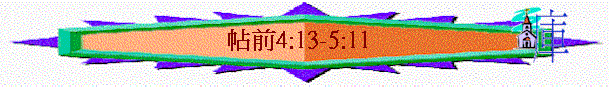
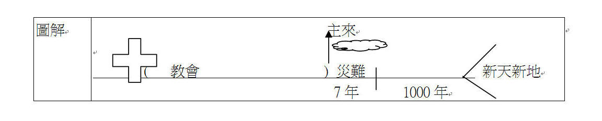

|
信仰的堅立與勉勵 |
|
|
信仰的堅定 |
生活的勉勵 |
|
1-3 |
4-5 |
二.生活的勉勵(4:1-5:22)
1.更加勉勵的原因(4:1)
2.更加勉勵的內容(4:2-5:22)
D.在等候生活上更加勉勵(4:13-5:11)
「弟兄們，論到時候、日期，不用寫信給你們，」5:1
「所以，你們該彼此勸慰，互相建立，正如你們素常所行的。」5:11
∼此段講到關乎復活及主的日子事奉，這些事是還沒有發生，信徒仍在等候中，但當中的內容有些他們是曉得，他們也素常行出在世等候主的美好行為，保羅藉此再勉勵他們如何在世等候這事情的發生，如何活出與世人不同的生活
a.活得更有指望----關乎復活的事情(4:13-18)
(1)勉勵原因
「論到睡了的人，我們不願意弟兄們不知道，恐怕你們憂傷，像那些沒有指望的人一樣。」4:13
(A)在主裡的人睡了
∼指到有信徒死了，如睡了的人一樣，息了勞苦，「睡」比「死亡」更有指望，因為睡了的人會有一日睡醒起來
(B)怕信徒們沒指望
∼世人對死亡可能認為人死如燈滅，親人離開不會再見，保羅怕他們也是一樣，認為人死後是已完結了，因此而憂傷及像沒有指望的人
(2)復活真理
(A)復活的肯定
「我們若信耶穌死而復活了，那已經在耶穌�媞峇F的人， 神也必將他們與耶穌一同帶來。」4:14
∼因耶穌已復活，所以在耶穌裡睡了的人，神也要將他與耶穌一同帶來
∼「帶來」----指在主裡死了的人會復活，與主一起來
(B)被提的內容

「我們現在照主的話告訴你們一件事：我們這活著還存留到主降臨的人，斷不能在那已經睡了的人之先。因為主必親自從天降臨，有呼叫的聲音和天使長的聲音，又有 神的號吹響；那在基督�埵漱F的人必先復活。以後我們這活著還存留的人必和他們一同被提到雲�堙A在空中與主相遇。這樣，我們就要和主永遠同在。」4:15-17
∼「照主的話」----保羅得了主的啟示，而這啟示是在「四福音」中未出現過(關乎被提)
∼「斷不能在那已經睡了的人之先」----應指下文信徒得著新的復活身體(睡了的人先復活之事)
(a)基督降臨
∼「降臨」----下來的意思，主必親自從天而下來
(b)三種聲音
「天使長米迦勒為摩西的屍首與魔鬼爭辯的時候，尚且不敢用毀謗的話罪責他，只說：「主責備你吧！」」猶v.9
「亞當的七世孫以諾，曾預言這些人說：「看哪，主帶著他的千萬聖者降臨，」猶v.14
「 就在一霎時，眨眼之間，號筒末次吹響的時候。因號筒要響，死人要復活成為不朽壞的，我們也要改變。」林前15:52
∼以諾曾預言主會帶著千萬聖者降臨
∼「呼叫」----命令的聲音，不知誰發的，但可能是要讓世人知道神發出命令，要成就主回來的事實
∼「天使長的聲音」----天使長應指米迦勒，他也發出聲音
∼「神的號吹響」----是指林前15:52末次的號筒吹響，號吹響應是為了召集屬神的人
(c)已死信徒必復活
(d)已死信徒和地上信徒一同被提到雲��
「我在夜間的異象中觀看，見有一位像人子的，駕著天雲而來，被領到亙古常在者面前，」但7:13
∼「被提」----有奪取、突然取去意思
∼在地信徒會如林前15:52所說，身體會改變，突然被取去，提到雲��
∼主會駕著雲降臨，信徒會一同在雲裡見主
(e)與主相遇
(f)永遠同在
(C)彼此的勸勉
「所以，你們當用這些話彼此勸慰。」4:18
∼「勸慰」----勉勵及鼓舞的意思，信徒知有復活及有一天會與已睡的人相遇，就要用這些真理，彼此勉勵，免得像沒有指望的人
b.活得更儆醒----關乎主的日子(5:1-11)
∼此段用很多世人與屬神的人之比較，而鼓勵信徒不要像沉醉的人一樣，總要儆醒等主回來
(1)儆醒的信徒
(A)曉得主會忽然臨到
「弟兄們，論到時候、日期，不用寫信給你們，因為你們自己明明曉得，主的日子來到，好像夜間的賊一樣。」5:1-2
「所以，你們要警醒，因為不知道你們的主是哪一天來到。家主若知道幾更天有賊來，就必警醒，不容人挖透房屋；這是你們所知道的。」太24:42-43
∼「時候」、「日期」----指主日子的時間
∼「曉得」----看見、注意的意思
∼信徒從主的話中已知祂會忽然臨到，我們雖不知主何時來臨，但會認知祂會忽然臨到
(B)不在黑暗�堥I睡著
「弟兄們，你們卻不在黑暗�堙A叫那日子臨到你們像賊一樣。你們都是光明之子，都是白晝之子。我們不是屬黑夜的，也不是屬幽暗的。所以，我們不要睡覺像別人一樣，總要警醒謹守。」5:5-6
(a)不在黑暗��
∼「黑暗」----看不到光，信徒是在光明中，是光明之子，看到光，看到主會回來，是注意主忽臨到的事實
∼我們當持續在光明中，時刻警覺主會回來
(b)不屬幽暗的
∼「幽暗」----也可指罪惡
∼信徒也不屬於幽暗，我們屬於光明，是光明之子，我們當儆醒自己不屬罪惡的
∼「儆醒」----有提高警覺的意思，是醒著，不是沉睡的
(2)沉睡的世人
(A)以為一直平安
「人正說「平安穩妥」的時候，災禍忽然臨到他們，如同產難臨到懷胎的婦人一樣，他們絕不能逃脫。」5:3
「挪亞的日子怎樣，人子降臨也要怎樣。當洪水以前的日子，人照常吃喝嫁娶，直到挪亞進方舟的那日；不知不覺洪水來了，把他們全都沖去。人子降臨也要這樣。」太24:37-39
∼世人卻和信徒不同，他們「正說」----一直以為日子都是平安及穩妥的時候
∼但災禍會忽然臨到他們，如挪亞時代，洪水來臨的日子，而此災難如同產難臨到懷胎的婦人一樣----是極其痛苦，是必然臨到的
(B)繼續沉醉生活
「因為睡了的人是在夜間睡，醉了的人是在夜間醉。」5:7
∼他們像夜間的人一樣，沉醉在睡眠或酒中，不知道那日子會來臨，仍過著不儆醒的生活
∼信徒知道自己與世人不同後，就不要效法他們，總要儆醒謹守，等候主隨時回來。
(3)繼續的謹守
「因為睡了的人是在夜間睡，醉了的人是在夜間醉。但我們既然屬乎白晝，就應當謹守，把信和愛當作護心鏡遮胸，把得救的盼望當作頭盔戴上。因為 神不是預定我們受刑，乃是預定我們藉著我們主耶穌基督得救。 他替我們死，叫我們無論醒著，睡著，都與他同活。」5:7-10
∼黑暗的人是放縱自己，看不到有災難，但屬神的人卻是清醒，知道主會再來，就當謹守。
∼「謹守」有不醉酒、節制及穩健的意思。
∼信徒當用信和愛當作護心鏡遮胸，把得救的盼望當作頭盔戴，作謹守工具
(A)信心的謹守
「但我們既然屬乎白晝，就應當謹守，把信和愛當作護心鏡遮胸，把得救的盼望當作頭盔戴上。」5:8
「我們為你們眾人常常感謝神，禱告的時候提到你們，在神我們的父面前，不住的記念你們因信心所做的工夫，因愛心所受的勞苦，因盼望我們主耶穌基督所存的忍耐。」帖前1:2-3
∼「胸」可以代表我們的心意，信徒如何謹守自己的心意？我們可以用信作護心鏡，用信心作信仰的謹守工具，有信就不動搖，而昔日帖撒羅尼迦教會因信心而作成很大的工夫，他們要以此信繼續持守
(a)持守離棄偶像的信心
「因為主的道從你們那裡已經傳揚出來。你們向神的信心不但在馬其頓和亞該亞，就是在各處也都傳開了；所以不用我們說什麼話。因為他們自己已經報明我們是怎樣進到你們那裡，你們是怎樣離棄偶像，歸向神，要服事那又真又活的神，」1:8-9
(b)持守服事活神的信心
「因為他們自己已經報明我們是怎樣進到你們那裡，你們是怎樣離棄偶像，歸向神，要服事那又真又活的神，」1:9
(c)持守對神之道的信心
「為此，我們也不住的感謝神，因你們聽見我們所傳神的道就領受了；不以為是人的道，乃以為是神的道。這道實在是神的，並且運行在你們信主的人心中。弟兄們，你們曾效法猶太中在基督耶穌裡神的各教會；因為你們也受了本地人的苦害，像他們受了猶太人的苦害一樣。」2:13-14
(d)持守面對患難的信心
「為此，我既不能再忍，就打發人去，要曉得你們的信心如何，恐怕那誘惑人的到底誘惑了你們，叫我們的勞苦歸於徒然。但提摩太剛才從你們那裡回來，將你們信心和愛心的好消息報給我們，又說你們常常記念我們，切切的想見我們，如同我們想見你們一樣。所以弟兄們，我們在一切困苦患難之中，因著你們的信心就得了安慰。」帖前3:5-7
∼他們昔日因信心，即使面對患難，也不動搖，他們要繼續用此信心面對日後的挑戰
(B)愛心的謹守
「在 神─我們的父面前，不住地記念你們因信心所做的工夫，因愛心所受的勞苦，因盼望我們主耶穌基督所存的忍耐。」1:3
「弟兄們，我們該為你們常常感謝神，這本是合宜的；因你們的信心格外增長，並且你們眾人彼此相愛的心也都充足。」1:3
∼他們也要用愛作護心鏡，因有愛，即使在守道過程中要勞苦，也是甘心的，有愛的時候，對主的心更堅貞，而昔日他們也因愛而持續的為主及為別人，作勞苦的工作，所以愛使一個信徒對主對人對為信仰所作的工更有持續力！
(C)盼望的謹守
∼頭代表我們的思想，我們的思想易被難處、撒但的衝擊影響，所以信徒要「把得救的盼望當作頭盔戴上」，保守自己的思想，盼望是可幫助信徒過謹守的生活；而「得救的盼望當作頭盔」的重點是盼望，盼望使人有忍耐，盼望使人在人生方向上有目標，有定位，不輕易受環境而影響持定的方向，會繼續存因盼望而有的忍耐之心，行完在世的路程，而此盼望是與「得救」有關，而帖前所講的得救，不單是得永生，更包含神救恩的計劃，信徒要有以下盼望作謹守的推動力：
(a)盼望主的再來
「在神我們的父面前，不住的記念你們因信心所做的工夫，因愛心所受的勞苦，因盼望我們主耶穌基督所存的忍耐。」1:3
「我們的盼望和喜樂，並所誇的冠冕是什麼呢？豈不是我們主耶穌來的時候、你們在他面前站立得住嗎？」2:19
∼信徒雖有患難，但常存盼望主再來的心，就可以產生忍耐
(b)盼望將來復活
「論到睡了的人，我們不願意弟兄們不知道，恐怕你們憂傷，像那些沒有指望的人一樣。我們若信耶穌死而復活了，那已經在耶穌裡睡了的人，神也必將他與耶穌一同帶來。」4:13-14
∼我們不是沒有指望的人，我們盼望有一日會復活
(c)盼望免受刑罰
「因為神不是預定我們受刑，乃是預定我們藉著我們主耶穌基督得救。」5:9
∼我們在世堅持是有價值的，因我們至終不是受刑，乃是得救
(d)盼望與主同活
「他替我們死，叫我們無論醒著、睡著，都與他同活。」5:10
∼主替我們死，祂也盼望我們在世繼續持守每時每刻，或睡或醒，也與主同活，同活包含與主結連，每天與主同行，主有此心意，也成我們的盼望及在世生活的方向，一生一世謹守與主同活。
(4)彼此的勸慰
「所以，你們該彼此勸慰，互相建立，正如你們素常所行的。」5:11
∼「建立」有建造、加強、使之能夠的意思
∼信徒要在等候的日子，彼此勸慰，鼓勵其他人持守信、望、愛。